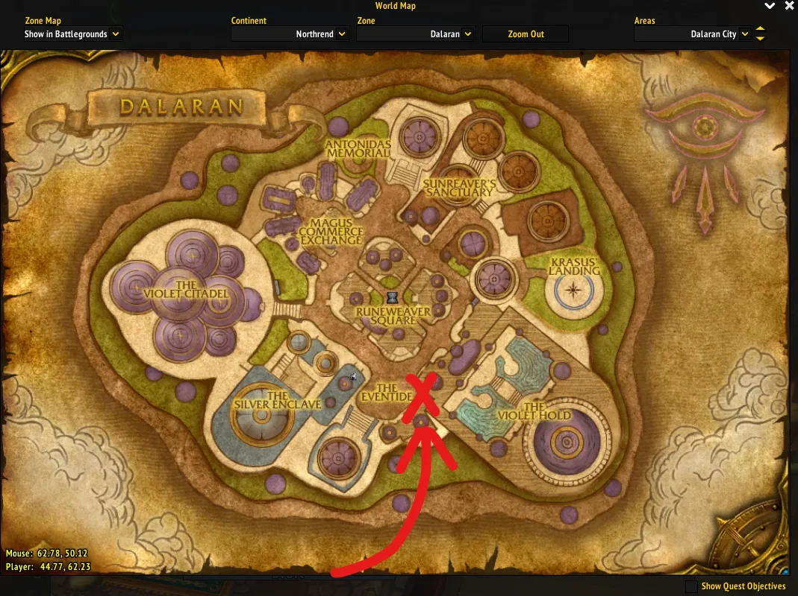
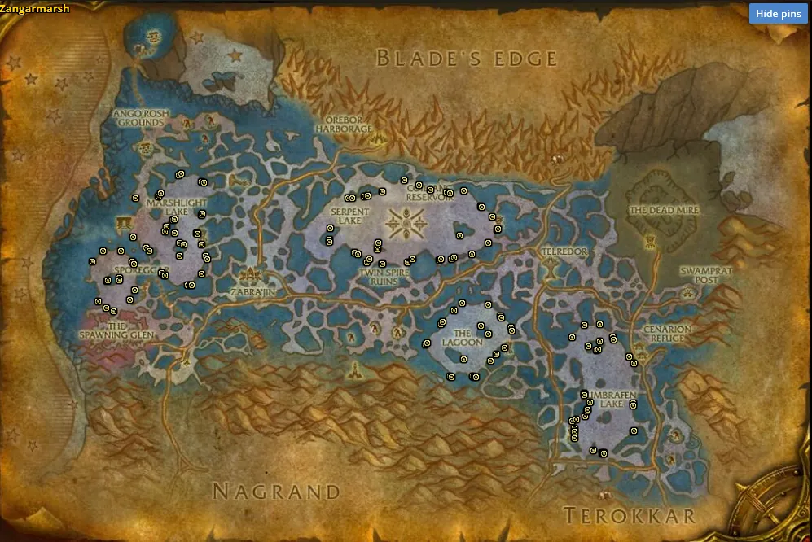
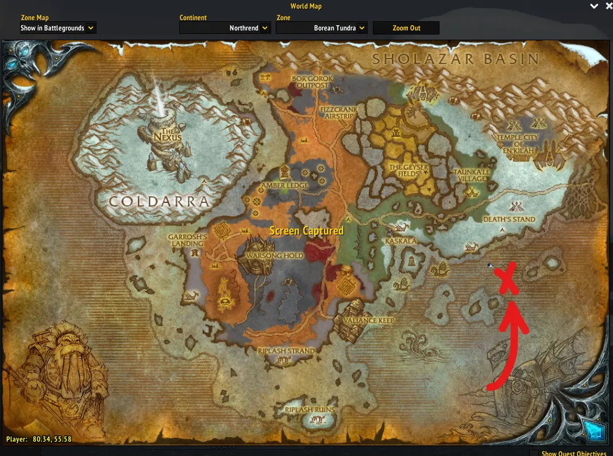

WotLK Warmane Icecrown - Fishing 1 to 450, Find Fish, Sea Turtle and Heirloom Ring
Fishing macro, leveling, the Find Fish book, the Sea Turtle and the Kalu'ak Fishing Derby.
Video
Fishing Macro
Create a fishing macro to equip your fishing pole and to accept to pick up any rare fish or mount you get.
Change “Fishing Pole” to your current fishing rod name.
#showtooltip fishing
/click StaticPopup1Button1
/equip [nocombat] Fishing Pole
/cast Fishing
Leveling 1 to 450
If you want to try to get the Sea Turtle mount while leveling fishing, go to the “Get the Sea Turtle Mount” section in this guide.
Same thing with the Kalu'ak Fishing Derby event, you can do it at level 1 fishing.
But if you want just getting 450, continue reading.
-
Go to Dalaran fountain

-
Learn Apprentice Fishing from Marcia Chase
-
Buy a fishing rod from her
-
Equip the Fishing Pole and start fishing in the fountain
-
At 50, 125, 200, 275 and 350 learn the next fishing skill
-
Keep fishing until you reach 450
Get “Find Fish” skill book
To learn the Find Fish skill, you need to open Heavy Supply Crate and get Weather-Beaten Journal.
-
Go to Zangarmarsh in Outland
-
Fish in any Steam Pump Flotsam node to get Heavy Supply Crate
-
Open Heavy Supply Crate until you get Weather-Beaten Journal
Follow the pins in the map to find the nodes easily, usually around lakes.

Get the Sea Turtle Mount
You have a (very low) chance to get the Sea Turtle mount when fishing in any node in Northrend.
If you want to learn the next Fishing Skill in Borean Tundra, here is the Fishing Master nearby.
Alliance: Old Man Robert <Fishing Trainer>
Horde: Fishy Ser'ji <Fishing Trainer>
You don’t need any specific Fishing Level to get the Sea Turtle mount, you can start at level 1 fishing and try your luck.
-
Go to Borean Tundra between these two icebergs (coordinates: 80,55)

-
Activate the “Find Fish” skill (optional)
-
Fish in any node you find
It’s going to take many tries so be patient.
Kalu'ak Fishing Derby, get Heirloom Ring and Booty Bay Teleport
If you want the heirloom ring Dread Pirate Ring or Boots of the Bay
Every Saturday at 2 PM realm time. A fishing event starts. You don’t need to take any quest or any fishing level to participate.
-
Make sure you know Fishing and have a Fishing Pole, also a flying mount would make it easier.
-
Go to Borean Tundra between these two icebergs (coordinates: 80,55)
-
Fish any node until you get Blacktip Shark
-
Return to Dalaran and go near the fountain
-
Return the quest to Elder Clearwater and choose Kalu'ak Fishing Derby option
-
Select the ring or the boots then get your reward
Sources
https://www.wowhead.com/wotlk/item=34109/weather-beaten-journal
https://www.wowhead.com/wotlk/quest=24803/kaluak-fishing-derby